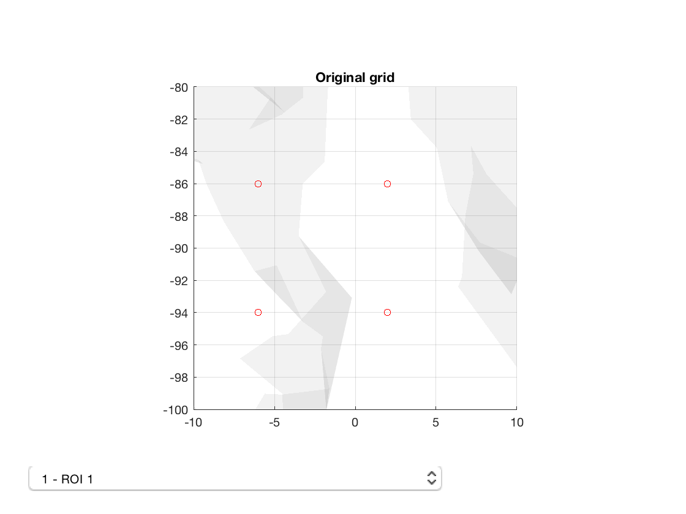
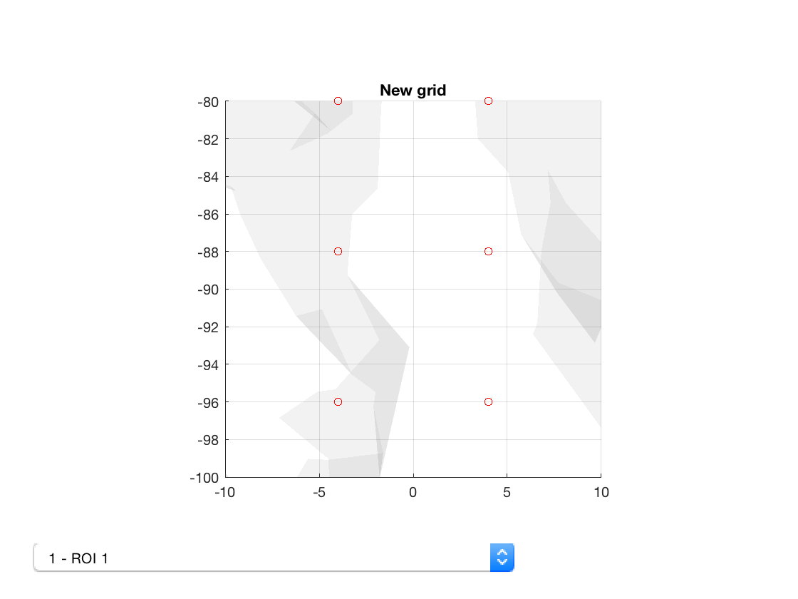

Utilities - Working with HCP data
This example shows how to work with HCP data in source space using OSL.
The HCP provides lead fields but not structure, which means that the HCP data can only be beamformed onto standard masks from FieldTrip. Although these masks have the same grid resolution as some of the standard masks, they have different sizes and also different offsets.
Starting with the raw HCP data, it is first beamformed onto one of the FieldTrip masks - these are in the `std_masks` folder with filenames `ft_*.nii.gz`. From this point, there are two options
- Apply standard parcellation pipelines, but using parcellations defined on the FieldTrip mask
- Convert the data onto one of the OSL standard masks, and then use existing parcellations
For the first option, you need a parcellation defined on a FieldTrip mask. If you only have a parcellation on an OSL standard mask, it can be resampled onto the FieldTrip grid:
osl_resample_nii_matlab(fullfile(osldir,'parcellations','fmri_d100_parcellation_with_PCC_reduced_2mm_ss5mm_ds8mm.nii.gz'),fullfile(osldir,'practical','example_parcellation.nii.gz'),'ft_8mm_brain_mask.nii.gz','interptype','nearest')
Note that the input and output files can be specified either as full paths, or the name of files within the 'std_masks' folder (i.e. if 'ft_8mm_brain_mask.nii.gz' does not exist in the current folder, it is loaded from 'std_masks'.
Now we can view the old and new parcellations
p_std = parcellation(fullfile(osldir,'parcellations','fmri_d100_parcellation_with_PCC_reduced_2mm_ss5mm_ds8mm.nii.gz')); p_std.plot; title('Original grid') set(gca,'View',[0 90]); set(gca,'XLim',[-10 10],'ZLim',[-5 5],'YLim',[-100 -80]) p_ft = parcellation(fullfile(osldir,'practical','example_parcellation.nii.gz')); p_ft.plot; title('New grid') set(gca,'View',[0 90]) set(gca,'XLim',[-10 10],'ZLim',[-5 5],'YLim',[-100 -80]) 
Notice how the voxels are slightly displaced. Also, the number of voxels is different
p_std.n_voxels p_ft.n_voxels
ans =
3559
ans =
5798
Having converted the parcellation, you can now use ROInets as usual to get parcel timecourse First, load in an MEEG file that was beamformed onto a FieldTrip mask
D = spm_eeg_load(fullfile(osldir,'example_data','hcp_example','subject_1')); D = D.montage('switch',2)
SPM M/EEG data object
Type: single
Transform: time
1 conditions
5798 channels
181 samples/trial
142 trials
Sampling frequency: 100 Hz
Loaded from file /Users/romesh/oxford_postdoc/toolboxes/osl/example_data/hcp_example/subject_1.mat
2 online montage(s) setup
Current montage applied (0=none): 2 ,named: "sources with noise based normalisation"
Use the syntax D(channels, samples, trials) to access the data
Type "methods('meeg')" for the list of methods performing other operations with the object
Type "help meeg/method_name" to get help about methods
Then, use ROInets to compute the node timecourses.
D = ROInets.get_node_tcs(D,p_ft.parcelflag(true),'PCA');
Processing trial 142 of 142 - estimated time to finish is 0 seconds No new channels information : setting channels info automatically.
From this point, you can proceed as normal. Another alternative is to convert the data onto the OSL standard mask. This could be accomplished by interpolating the source space voxels. For example, taking a distance-weighted average of voxels. This can be performed using osl_resample_meeg().
D = D.montage('switch',2) D = osl_resample_meeg(D,'ft_8mm_brain_mask.nii.gz','MNI152_T1_8mm_brain_mask.nii')
SPM M/EEG data object
Type: single
Transform: time
1 conditions
5798 channels
181 samples/trial
142 trials
Sampling frequency: 100 Hz
Loaded from file /Users/romesh/oxford_postdoc/toolboxes/osl/example_data/hcp_example/subject_1.mat
3 online montage(s) setup
Current montage applied (0=none): 2 ,named: "sources with noise based normalisation"
Use the syntax D(channels, samples, trials) to access the data
Type "methods('meeg')" for the list of methods performing other operations with the object
Type "help meeg/method_name" to get help about methods
Output has not been validated yet
No new channels information : setting channels info automatically.
SPM M/EEG data object
Type: single
Transform: time
1 conditions
3559 channels
181 samples/trial
142 trials
Sampling frequency: 100 Hz
Loaded from file /Users/romesh/oxford_postdoc/toolboxes/osl/example_data/hcp_example/subject_1.mat
4 online montage(s) setup
Current montage applied (0=none): 4 ,named: "Converted /Users/romesh/oxford_postdoc/toolboxes/osl/std_masks/ft_8mm_brain_mask.nii.gz to /Users/romesh/oxford_postdoc/toolboxes/osl/std_masks/MNI152_T1_8mm_brain_mask.nii"
Use the syntax D(channels, samples, trials) to access the data
Type "methods('meeg')" for the list of methods performing other operations with the object
Type "help meeg/method_name" to get help about methods
A new online montage will be written corresponding to the new coordinates.